Overhaul
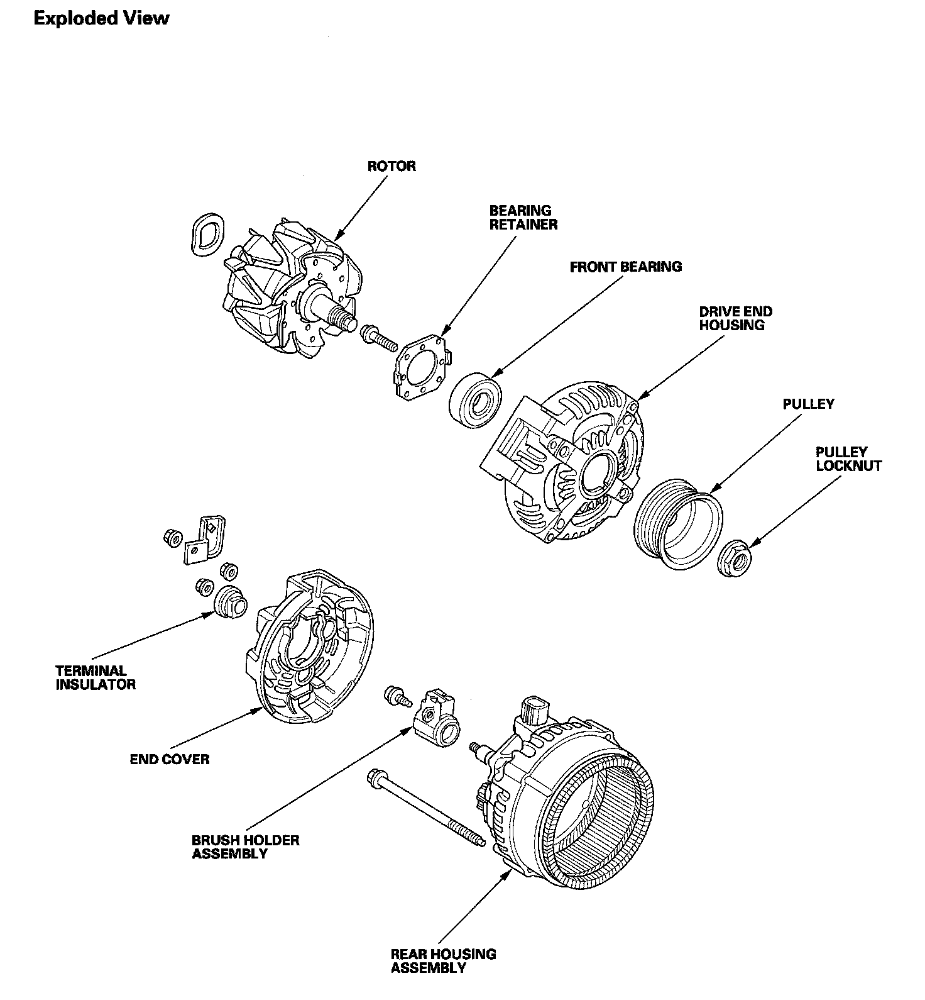
Alternator Overhaul
Special Tools Required
- Driver 07749-0010000
- Attachment, 42 x 47 mm 07746-0010300
NOTE: Refer to the Exploded View as needed during this procedure.
1. Test the alternator and regulator before you remove them.
2. Remove the alternator.
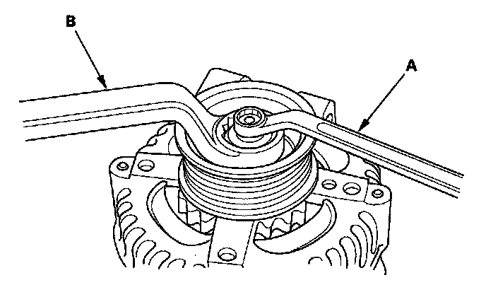
3. If the front bearing needs replacing, remove the pulley lock nut with a 10 mm wrench (A) and a 22 mm wrench (B). If necessary, use an impact wrench.
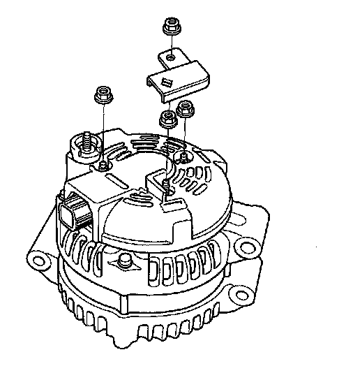
4. Remove the harness stay and the three flange nuts from the alternator.
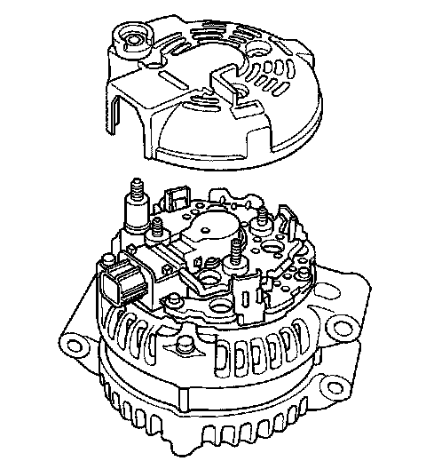
5. Remove the end cover.
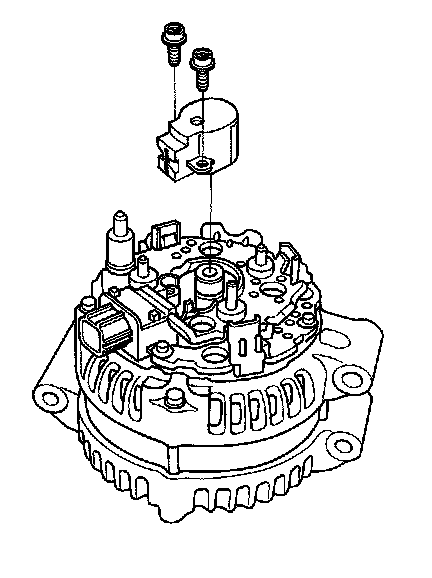
6. Remove the brush holder.
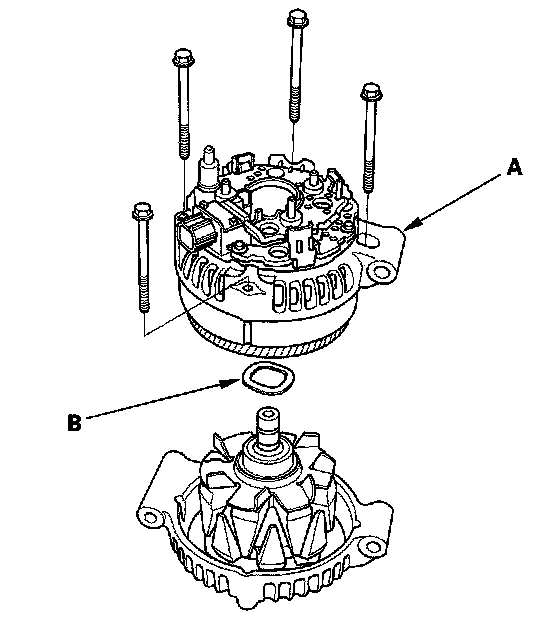
7. Remove the four bolts, then remove the rear housing assembly (A), and washer (B).
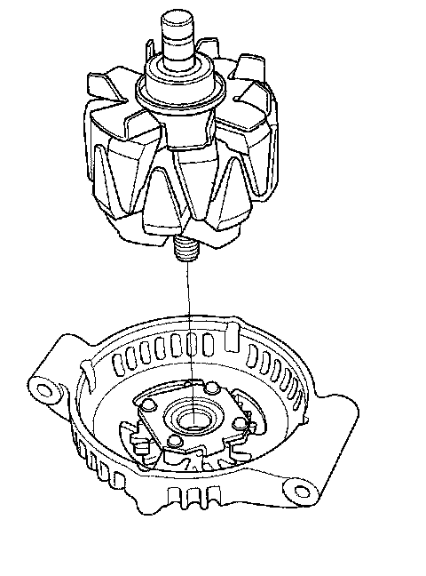
8. If you are not replacing the front bearing, go to step 13. Remove the rotor from the drive end housing.
9. Inspect the rotor shaft for scoring, and inspect the bearing journal surface in the drive end housing for seizure marks.
- If the rotor is damaged, replace the rotor assembly.
- If the rotor is OK, go to step 10.
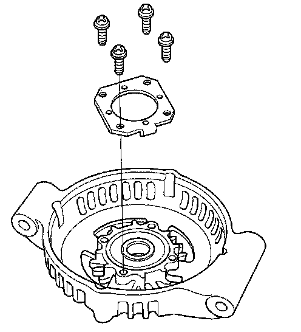
10. Remove the front bearing retainer plate.
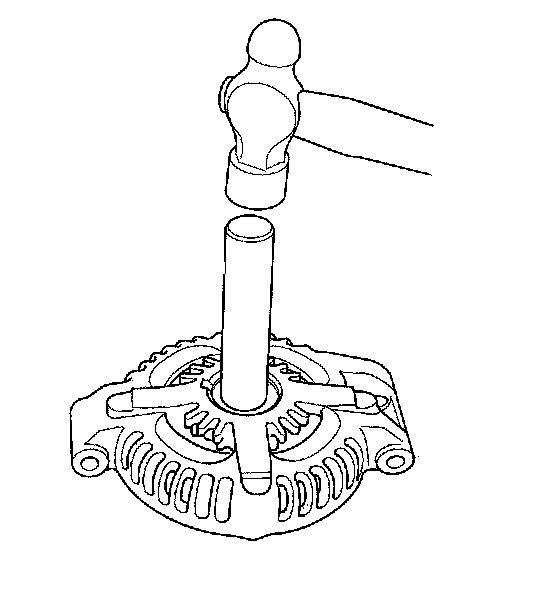
11. Drive out the front bearing with a brass drift and hammer.
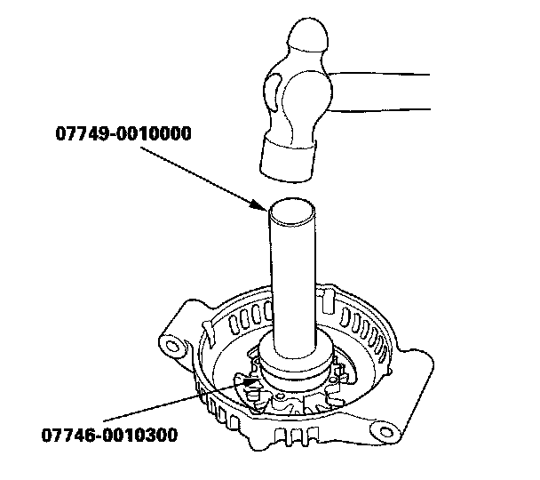
12. With a hammer and special tools, install a new front bearing in the drive end housing.
Alternator Brush Inspection
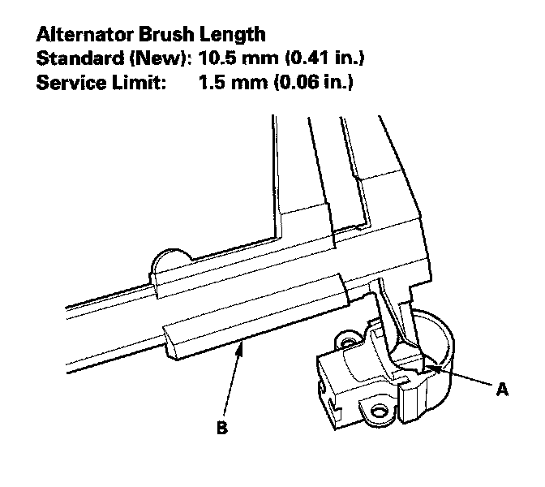
13. Measure the length of both brushes (A) with vernier caliper (B).
- If either brush is shorter than the service limit, replace the brush holder assembly.
- If brush length is OK, go to step 14.
Rotor Slip Ring Test
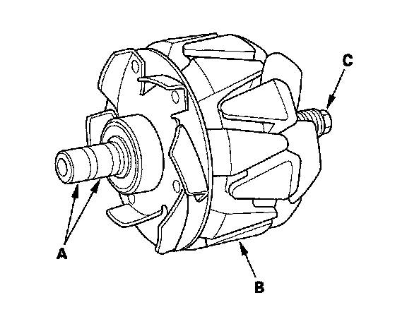
14. Check for continuity between the slip rings (A).
- If there is continuity, go to step 15.
- If there is no continuity, replace the rotor assembly.
15. Check for continuity between each slip ring and the rotor (B) and the rotor shaft (C).
- If there is no continuity, replace the rear housing assembly, and go to step 16.
- If there is continuity, replace the rotor assembly.
Alternator Reassembly
16. If you removed the pulley, put the rotor in the drive end housing, then tighten its lock nut to 110 N.m (11.2 kgf.m, 81.0 lbf-ft),
17. Remove any grease or any oil from the slip rings.
18. Put the rear housing assembly and drive end housing/rotor assembly together, tighten the four through bolts.
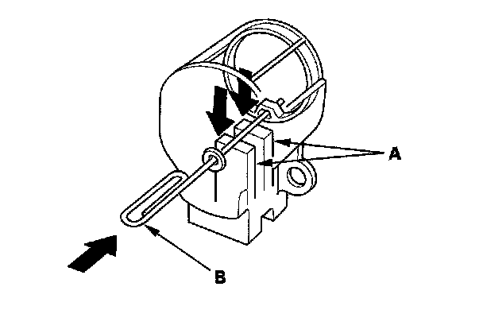
19. Push the brushes (A) in, then insert a pin or drill bit (B) (about 1.6 mm (0.06 in.) diameter) to hold them there.
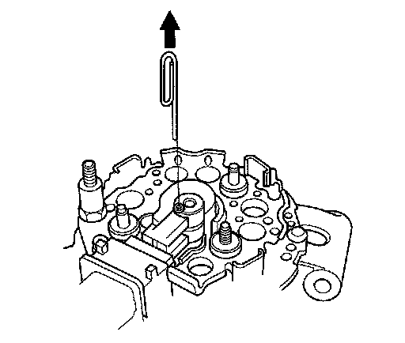
20. Install the brush holder, and pull out the pin.
21. Install the end cover.
22. After assembling the alternator, turn the pulley by hand to make sure the rotor turns smoothly and without noise.
23. Install the alternator and drive belt.